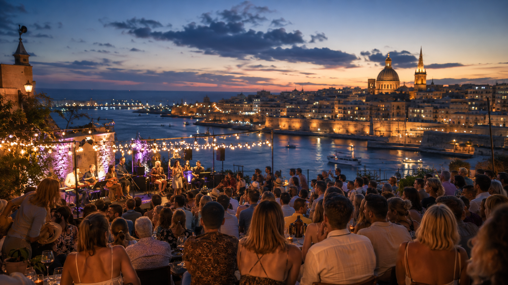
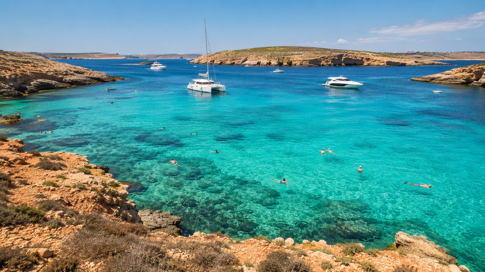
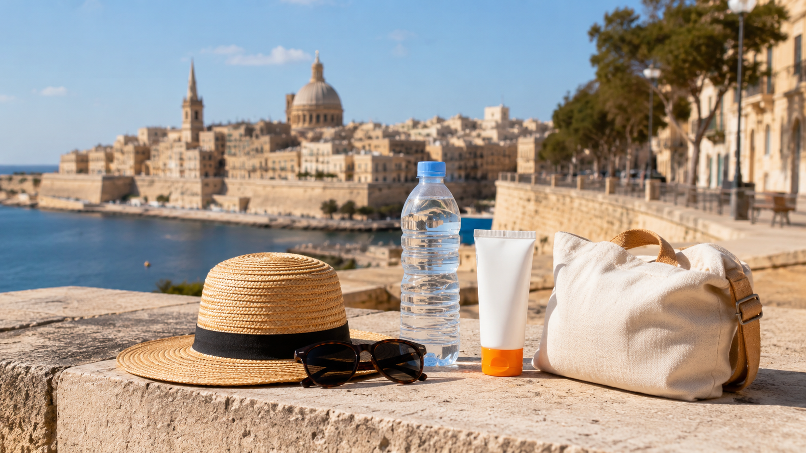
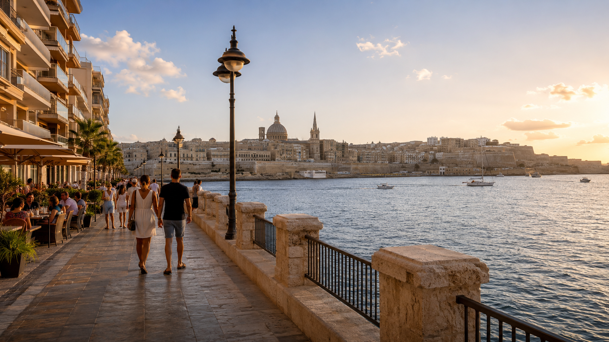
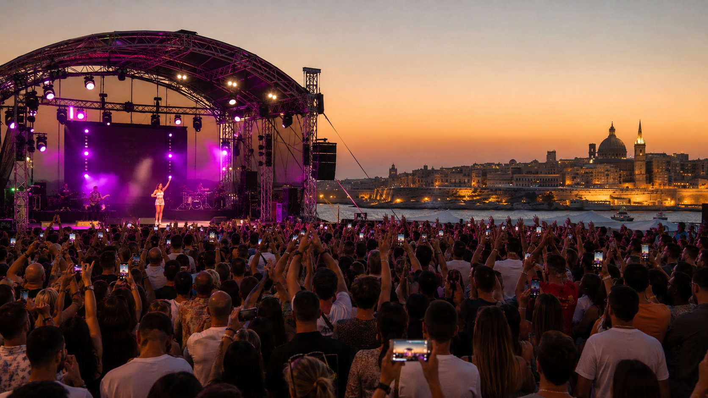

Malta je malý ostrov, ale v lete vie pôsobiť ako veľká stredomorská scéna. Cez deň more, historická Valletta, výlet na Comino alebo prechádzka po pobreží. Večer hudba, festivaly, prístavná atmosféra a ulice plné dovolenkovej energie.
Jedným z najväčších júlových lákadiel môže byť Isle of MTV Malta 2026. Podľa dostupných informácií sa pri podujatí spomína aj Katy Perry. Program si však treba pred cestou vždy overiť na oficiálnom webe podujatia, pretože line-up, časy aj organizačné pokyny sa môžu meniť.
Tento článok nie je výzva kúpiť letenku bez rozmýšľania. Je to praktická inšpirácia: ak láka Malta, hudba, more a živá večerná atmosféra, júl môže byť zaujímavý. Len treba počítať aj s horúčavami.
Prečo Malta v júli láka
Malta spája viac dovolenkových svetov naraz. Na malej ploche sú historické mestá, skalnaté pobrežie, tyrkysové zátoky, lodné výlety, večerný život aj kultúrne podujatia.
Pre slovenského cestovateľa je dôležité najmä to, že Malta sa dá riešiť priamo z Bratislavy. Pri orientačnom vyhľadaní používateľa vychádzala spiatočná letenka Bratislava – Malta na termín 16. – 23. júla približne na 118 €.
Cesta tam: Bratislava 22:55 → Malta 01:15 nasledujúci deň, dĺžka letu približne 2 h 20 min. Cesta späť: Malta 20:15 → Bratislava 22:30, dĺžka letu približne 2 h 15 min.
Cena je orientačná a môže sa meniť podľa obsadenosti, batožiny, termínu a času nákupu. Pri lacných letenkách treba vždy skontrolovať, či cena zahŕňa len malú osobnú tašku alebo aj väčšiu príručnú batožinu.
Bratislava je prvá voľba
Pri Malte treba ako prvú možnosť overiť Bratislavu. Ak existuje priama linka z Bratislavy a sedí termín, je to pre slovenského cestovateľa najjednoduchšie riešenie.
Viedeň, Budapešť alebo Krakov dávajú zmysel až ako alternatíva: napríklad keď z Bratislavy nesedí deň odletu, cena je výrazne vyššia, nie je vhodná batožina alebo je potrebný iný termín.
Isle of MTV a známe mená
Isle of MTV Malta patrí medzi najznámejšie letné hudobné podujatia na ostrove. V minulosti sa s ním spájali aj veľké mená popovej a tanečnej scény. Afrojack môže byť dobrým historickým príkladom známeho mena, nie potvrdeným účinkujúcim pre rok 2026.
Pri roku 2026 je najbezpečnejšia opatrná formulácia: podľa dostupných informácií sa pri Isle of MTV Malta 2026 spomína Katy Perry. Finálny program, miesto a pokyny si však treba pred cestou overiť na oficiálnom webe podujatia.

More cez deň, koncert večer
Najväčšie čaro Malty je v kombinácii. Cez deň sa dá ísť k moru, na loď, do Valletty alebo na krátky výlet. Večer sa ostrov mení na živé miesto s hudbou, reštauráciami a letnou atmosférou.
Na krátky pobyt netreba naháňať celý ostrov. Lepšie je vybrať si niekoľko silných bodov: Vallettu, Sliemu, Comino / Blue Lagoon, Mdinu a pri dlhšom pobyte aj Gozo.

Horúčavy netreba podceniť
Júl pri Stredomorí vie byť krásny, ale aj náročný. Pri Malte to platí dvojnásobne, pretože veľa miest je kamenných, slnečných a v sezóne rušných.
Praktický denný plán môže vyzerať jednoducho: ráno Valletta, Mdina, krátky výlet alebo loď; obed a skoré popoludnie tieň, klimatizácia, oddych, ľahký obed a voda; podvečer presun, večera a príprava na koncert alebo večerný program; večer hudba, festival, pobrežná prechádzka alebo drink s výhľadom.
Na koncert alebo väčšie podujatie sa oplatí myslieť prakticky: ľahké oblečenie, pohodlné topánky, voda podľa pravidiel organizátora, pokrývka hlavy pri skoršom príchode, powerbanka, vopred pozretý návrat na hotel a ubytovanie s klimatizáciou.

Kde bývať
Pri takejto ceste dávajú najväčší zmysel Sliema, Valletta, Floriana alebo St. Julian’s.
Sliema je praktická základňa s promenádou, reštauráciami a výhľadom na Vallettu. Valletta má najkrajšiu atmosféru a históriu, ale často vyššie ceny. Floriana môže byť vhodná, ak je cieľom večerné podujatie v okolí Valletty alebo Floriany. St. Julian’s je živšia lokalita pre tých, ktorí chcú viac nočného života.
Pri júlovom pobyte je klimatizácia dôležité kritérium. Pri orientačnom vyhľadaní ubytovania v Slieme na termín 16. – 23. júla pre 2 osoby vychádzali klimatizované hotely a apartmány približne od 1 100 € do 1 600 € za 7 nocí. Ceny a dostupnosť sa môžu meniť.

Pre koho je tento tip vhodný
Malta v júli je vhodná pre cestovateľov, ktorí chcú spojiť more, hudbu, večerný život, krátky let, historické mestá a atmosféru stredomorského ostrova.
Menej vhodná je pre tých, ktorí hľadajú úplný pokoj, prázdne pláže a chladnejšie počasie. Malta v júli je živá, horúca a populárna.
Oplatí sa ísť?
Ak sedí letenka z Bratislavy, ubytovanie má klimatizáciu a plán nie je preplnený od rána do noci, Malta v júli môže byť veľmi dobrý cestovateľský nápad.
Nie je to lacná pokojná dovolenka bez plánovania. Je to skôr živý ostrovný zážitok: more cez deň, koncertná atmosféra večer a potreba myslieť na horúčavy.
